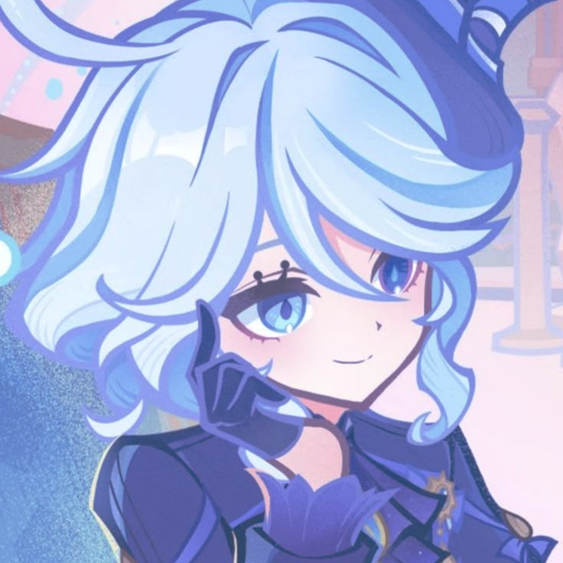

Humana · Maga (Evocación) · Nivel 3
Antes cuando era un solo ser, Foçalors, la Diosa de la Justicia, separó su divinidad de su cuerpo y espíritu, dejando atrás su yo humano, Furina. Después de la ejecución de Foçalors y la destrucción del Trono Divino del Arconte Hydro, Furina dejo su papel y ahora vive su vida como una humana común y corriente.
Fuerza
+2
15
Destreza
+1
12
Constitución
+1
13
Inteligencia
-1
9
Sabiduria
+0
10
Carisma
+3
16
Competencia
+2
BONIFICADOR
Caminando
30
Pies
Inpiración heróica
Hydro